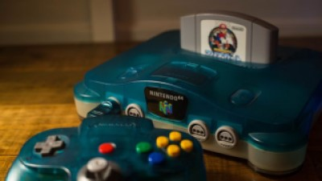

The Brown Box
Video Game systems have transformed over the years greatly. The first known game system that was released is called the brown box. It was developed by a small team that was headed by Ralph H. Baer. They worked for a company known as Sanders Associates who then released the console under Magnavox. This occured in September of 1972 and was sold abroad a year later.

Nintendo 64
The Nintendo 64 was an extremely popular console of its time. The below picture is of a Nintendo 65. It featured 4 controller slots and a cartrige in which a game would be inserted into. The graphics for its time were quite advanced as well were the games. Some of these games are still even popular today such as Super Smash Bros Melee. The poupularity of these games have also encouraged them to be remade on todays systems as well.
How did video games start?
What started as experiments and just for fun projects in labs, quickly became an international phenomenon known as video games. Something that was once just a small gather of pixels on a screen, has now become a past time for many.Due to this we can now play video games that put us into virtual worlds that would otherwise be completely impossible. It truely opened up a world of imagination for some people. Especially those who were in charge of creating them in the first place. Although, some games have kept with realism instead of putting a person into a completely unrealistic setting. The best part about video games is they can be whatever the creator wants them to be, and for the consumer they just have to look for games aimed towards their playstyle. Most games have a particular genre which consumers and creators both follow in a sense.
Pong
The video above shows some gameplay of one of the first games ever created known as pong. A very simple game with basic input and output. However, it was the beginning of what we see today.